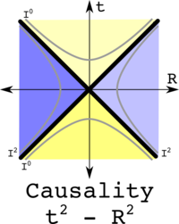
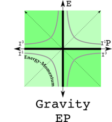

The PGT, Personal Gravity Theory, Contest
In this contest, a homework assignment is given to help you develop your very own PTG - Personal Gravity Theory. The eventual goal is to make the work to grow into TTG - THE Gravity Theory. To enter the contest, you need to answer parts A and B found below, C being optional. You should be willing to share your answer as it will appear on this site in the Answers directory, listed in the order received.
Compensation
$100 for the first answer, $50 for the second, $25 for the third, $12, $6, $3, $2, $1. Nine and later get a numbered and signed business card suitable for framing.
Winner's List
blanko...
Create Your PGT Homework Assignment (PGT=Personal Gravity Theory)
A. Newton's theory of gravity was too simple since gravity only changed measurements of time and not space. Einstein's theory of gravity was too hard, requiring finding solutions to 10 nonlinear differential equations. Your assignment is to find a PGT that changes both measurements of time and space but is not too hard. To do physics, one needs to know where things are in space-time, and the energy-momentum. Here are two graphs of space-time and energy momentum, with zeroes in black and invariants in gray:
| Space-time | Energy-Momentum |
|---|---|
|  |  |
Treat space-time as a quaternion, with time t being real and space R being three imaginaries. Treat energy-momentum as a quaternion, with energy E as being real and momentum P being three imaginaries. Square both space-time and energy-momentum. What sort of physics arises when two observers agree on the real number of space-time squared? What sort of physics would arise if two observers agree on the imaginary value of energy-momentum squared? Show your PGT is consistent with some tests of gravity. Is it consistent with all tests?
hint:
B. Derive the transformation law found in the hint above. Note: I did not answer this question myself, it was the work of Purple Penguin. Hint. Set up a transformation law super similar to a Lorentz transformation, a mix of gammas, gamma betas, energy E and momentum P. For the energy E transformation, eliminate P. Good luck.
C. Come up with a proposal for all of these gravitational escape velocity gammas. I should confess I don't know the answer.
Email homework solutions to: sweetser@alum.mit.edu
If your answers to A and B look correct to me, you must be willing to have your name listed publicly. You will need to supply a mailing address so I can send you a check.I would also like to put your answer in a directory, listed in order of accepted answers. You are free to choose not to let your answer be publicly available (or submit an upgrade to the one supplied originally, your choice).
The first one to answer question C gets $200.